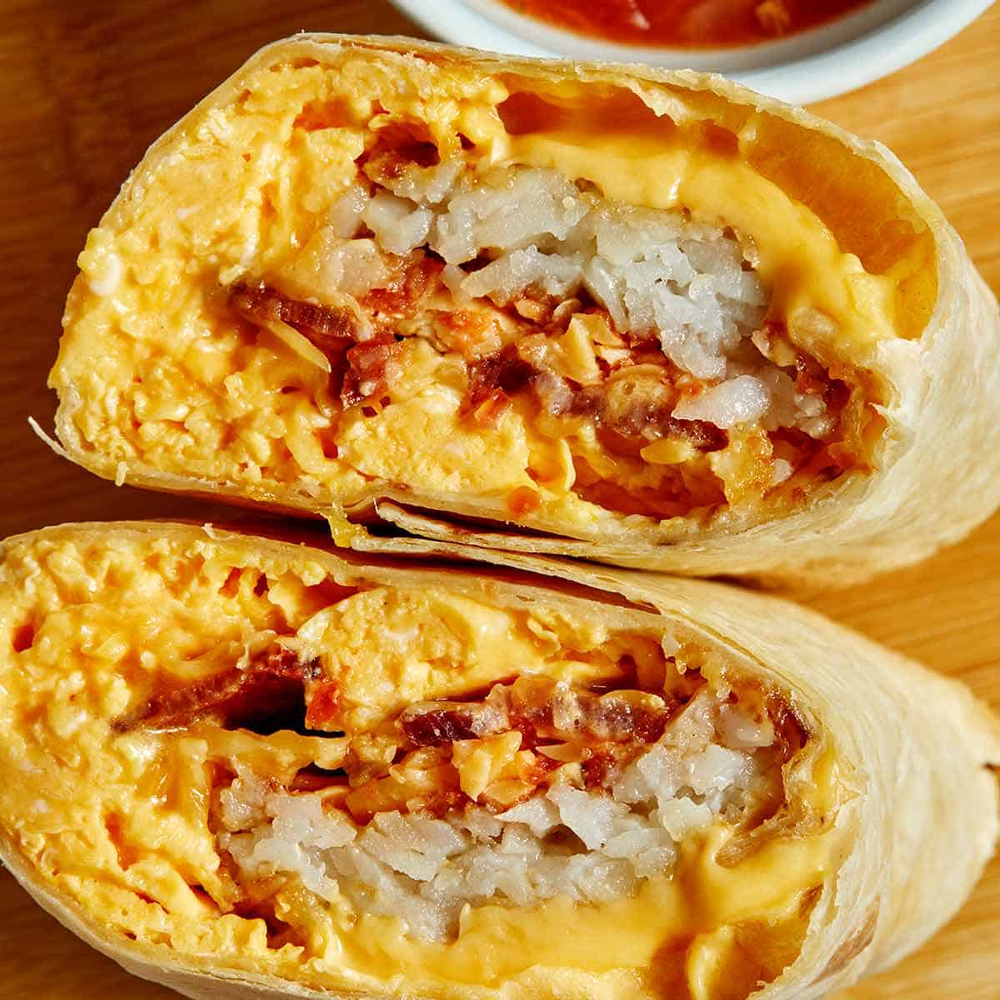
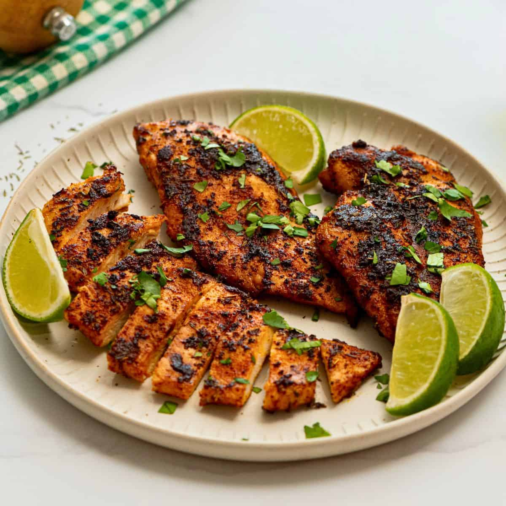
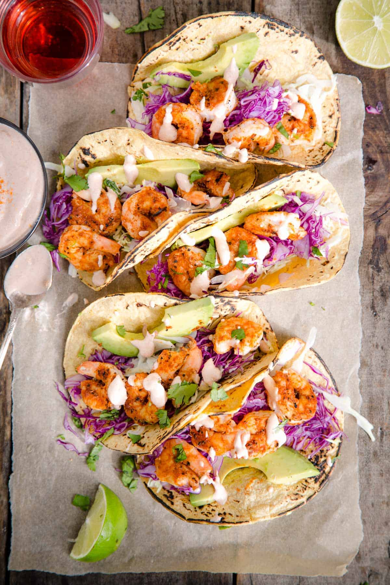

Breakfast burritos are the ultimate morning comfort food — a warm, hearty tortilla wrapped around a satisfying combination of fluffy scrambled eggs, savory sausage or crispy bacon, melted cheese, and your favorite fillings like roasted peppers, creamy avocado, or seasoned potatoes. Born from the vibrant flavors of Tex-Mex cuisine, this handheld meal is as versatile as it is delicious, making it perfect for lazy weekend brunches and busy weekday mornings alike. Whether you load yours up with fresh salsa and sour cream or keep it simple with just eggs and cheese, every bite delivers a bold, satisfying flavor that will keep you fueled and happy all morning long.
Breakfast burritos are the ultimate morning comfort food — a warm, hearty tortilla wrapped around a satisfying combination of fluffy scrambled eggs, savory sausage or crispy bacon, melted cheese, and your favorite fillings like roasted peppers, creamy avocado, or seasoned potatoes. Born from the vibrant flavors of Tex-Mex cuisine, this handheld meal is as versatile as it is delicious, making it perfect for lazy weekend brunches and busy weekday mornings alike. Whether you load yours up with fresh salsa and sour cream or keep it simple with just eggs and cheese, every bite delivers a bold, satisfying flavor that will keep you fueled and happy all morning long.
Breakfast burritos are the ultimate morning comfort food — a warm, hearty tortilla wrapped around a satisfying combination of fluffy scrambled eggs, savory sausage or crispy bacon, melted cheese, and your favorite fillings like roasted peppers, creamy avocado, or seasoned potatoes. Born from the vibrant flavors of Tex-Mex cuisine, this handheld meal is as versatile as it is delicious, making it perfect for lazy weekend brunches and busy weekday mornings alike. Whether you load yours up with fresh salsa and sour cream or keep it simple with just eggs and cheese, every bite delivers a bold, satisfying flavor that will keep you fueled and happy all morning long.

Blackened chicken is a bold, flavor-packed dish that brings the soulful heat of Cajun cooking straight to your table. Coated in a robust blend of spices — think smoky paprika, garlic, cayenne, and dried herbs — the chicken is seared over high heat until a deep, dark crust forms on the outside, locking in all the juicy tenderness within. Despite the name, blackening isn't about burning; it's a carefully crafted technique that creates an irresistible contrast between the slightly charred, spice-crusted exterior and the moist, flavorful meat inside. Originating from the kitchens of legendary Louisiana chef Paul Prudhomme in the 1980s, this cooking method has become a staple of Southern cuisine and beyond. Serve it sliced over a crisp salad, nestled in a sandwich, or alongside dirty rice and roasted vegetables for a meal that's as satisfying as it is unforgettable.

Shrimp tacos are a fresh, vibrant celebration of coastal flavors that bring a little beachside bliss to any meal. Tender, seasoned shrimp — whether grilled, sautéed, or lightly battered and fried — are nestled into warm corn or flour tortillas and topped with a colorful array of toppings like crunchy cabbage slaw, creamy chipotle sauce, bright pico de gallo, and a squeeze of fresh lime. Rooted in the bustling fish taco culture of Baja California, Mexico, shrimp tacos have become a beloved staple up and down the coasts and well into the American mainstream. They come together in minutes, making them ideal for a quick weeknight dinner, a laid-back summer gathering, or any time you're craving something light yet deeply satisfying. With the perfect balance of smoky, tangy, and fresh flavors in every bite, shrimp tacos are the kind of dish that instantly transports you to somewhere sunny and warm.
Shrimp tacos are a fresh, vibrant celebration of coastal flavors that bring a little beachside bliss to any meal. Tender, seasoned shrimp — whether grilled, sautéed, or lightly battered and fried — are nestled into warm corn or flour tortillas and topped with a colorful array of toppings like crunchy cabbage slaw, creamy chipotle sauce, bright pico de gallo, and a squeeze of fresh lime. Rooted in the bustling fish taco culture of Baja California, Mexico, shrimp tacos have become a beloved staple up and down the coasts and well into the American mainstream. They come together in minutes, making them ideal for a quick weeknight dinner, a laid-back summer gathering, or any time you're craving something light yet deeply satisfying. With the perfect balance of smoky, tangy, and fresh flavors in every bite, shrimp tacos are the kind of dish that instantly transports you to somewhere sunny and warm.
This recipe gallery was made possible by pinterest, google images, and my computer science class, for providing images and teaching me how to code html